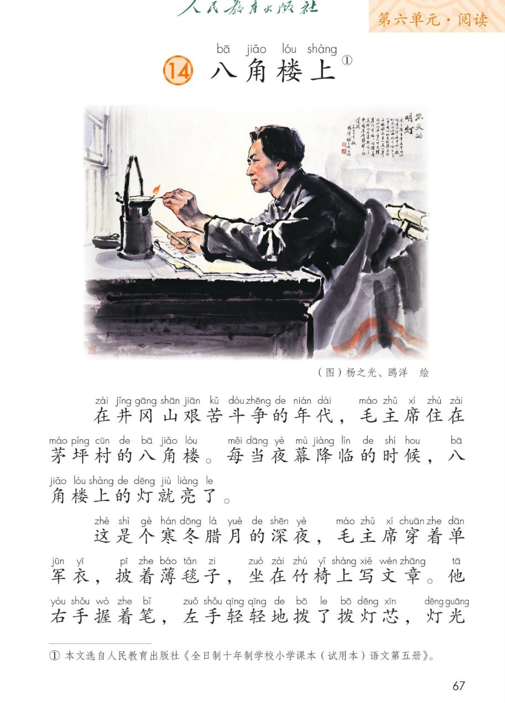
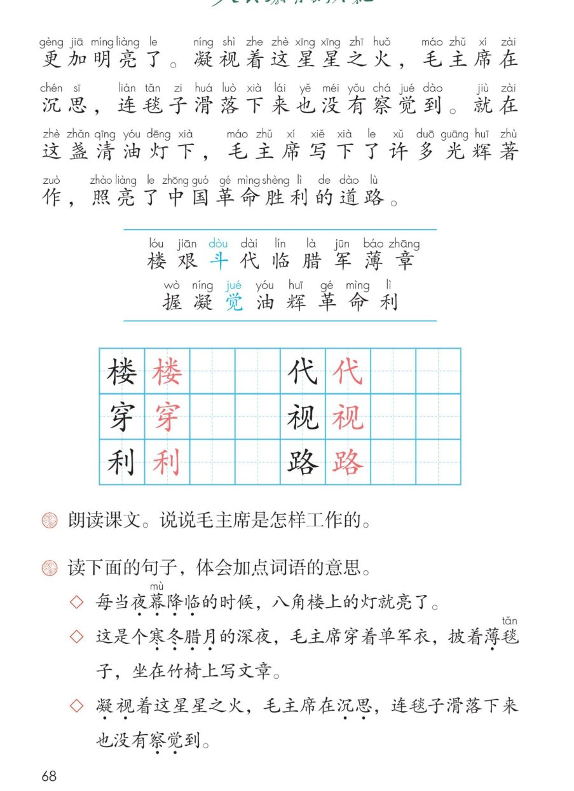

💡 第 14 课《八角楼上》· 有声图文带读
统编版语文 · 第六单元·阅读 · 课本 P67~68
课文 2 个自然段
会认字 17
会写字 6
听写词 10
近义词 4 组
深入理解 8 题
本课本领 读出敬爱之情
🎧 五步学（可随时点任意一句、一个字、一个词单独听）：
① 听读课文——一句一句读，读到哪一句哪一句发光；开「跟读」后读完一句留时间让你自己读。
② 学字词——17 个会认字、6 个会写字（含书写提示），点一个读一个。
③ 词语·听写·造句——听写 10 个词（读两遍→你写→报答案→听示范句），再听 4 组近义词辨析。
④ 深入理解——8 道题（认知 / 理解 / 运用 / 拓展），开放题答案不唯一，先想后看。
⑤ 按课文顺序说·分角色——按课文顺序说清毛主席怎样工作，再分工朗读课文。
① 听读课文（点哪一句，读哪一句）点段前的 ①②③ 听整段
注音只标本课要认、要写的字，读音来自课本第 3 页生字表
🎤 朗读要求（老师标准）
① 读准字音，不添字、不漏字、不回读；
② 逗号稍停，句号停得长一点；
③ “每当……就……”读出天天如此的感觉；
④ “寒冬腊月”“单军衣”“薄毯子”读得慢一点，让人听出冷；
⑤ 最后两句读得响亮有力，读出敬爱之情。
①在井冈山艰苦斗争的年代，毛主席住在茅坪村的八角楼。每当夜幕降临的时候，八角楼上的灯就亮了。
②这是个寒冬腊月的深夜，毛主席穿着单军衣，披着薄毯子，坐在竹椅上写文章。他右手握着笔，左手轻轻地拨了拨灯芯，灯光更加明亮了。凝视着这星星之火，毛主席在沉思，连毯子滑落下来也没有察觉到。就在这盏清油灯下，毛主席写下了许多光辉著作，照亮了中国革命胜利的道路。
🤔 想一想（点我可跳过）
课本的样子（点一张图，听读这一页）点一张图，听读整页

第 67 页 · 课文前半与插图

第 68 页 · 课文后半与生字题
📖 人教版《语文》二年级上册 · 课本第 67~68 页 · 图片仅供个人学习，版权归人民教育出版社所有
② 会认字（17 个）点一个字，听读音、词语和课文里的句子
② 会写字（6 个）结构、部首、笔画与书写提示为通用规范，供参考，以教材和老师的指导为准
楼
lóu
楼房 · 高楼
13 画 · 左右（木）
左窄右宽，木旁捺变点
代
dài
年代 · 代表
5 画 · 左右（亻）
左窄右宽，斜钩舒展
穿
chuān
穿着 · 穿上
9 画 · 上下（穴）
穴盖要宽，下面横要长
视
shì
注视 · 电视
8 画 · 左右（礻）
左窄右宽，竖弯钩舒展
利
lì
胜利 · 顺利
7 画 · 左右（刂）
左宽右窄，竖要挺直
路
lù
道路 · 马路
13 画 · 左右（足）
足旁口要小，撇捺舒展
③ 会写字组词（课后练一练）点一行，听读这一组词语
楼楼房 高楼 楼梯 上楼
代年代 古代 代表 代替
穿穿着 穿上 穿过 穿衣
视注视 电视 视力 重视
利胜利 顺利 利用 利益
路道路 马路 路灯 走路
③ 听写（10 个词）读两遍 → 你在纸上写 → 报答案 → 听示范句
准备听写 · 共 10 个词
○ ○ ○
点下面的「开始听写」，听到一个词就写一个词。
③ 听写的词 · 造句示范点词听读，点句子听示范句，再自己说一句
1井冈山课后词语
示范句：毛主席在井冈山领导革命。
✏️ 我也能说：谁在哪里做什么。比如：我们在井冈山参观了八角楼。你也试着说一句。
2艰苦课文词语
示范句：那时候条件很艰苦，大家还是坚持学习。
✏️ 我也能说：什么很艰苦。比如：爬山的路又远又陡，走得很艰苦。你也试着说一句。
3斗争课文词语
示范句：在井冈山艰苦斗争的年代，毛主席住在八角楼。
✏️ 我也能说：谁和什么作斗争。比如：医生和疾病作斗争。你也试着说一句。
4年代课文词语
示范句：在井冈山艰苦斗争的年代，毛主席住在茅坪村。
✏️ 我也能说：什么年代，谁做了什么。比如：爷爷小时候的年代，没有电视。你也试着说一句。
5夜幕课文词语
示范句：夜幕降临，村里安静下来了。
✏️ 我也能说：夜幕降临，谁在做什么。比如：夜幕降临，妈妈还在灯下备课。你也试着说一句。
6降临课文词语
示范句：每当夜幕降临的时候，八角楼上的灯就亮了。
✏️ 我也能说：什么降临了。比如：春天降临，小草绿了。你也试着说一句。
7八角楼课文词语
示范句：毛主席住在茅坪村的八角楼。
✏️ 我也能说：谁住在什么地方。比如：我们参观了茅坪村的八角楼。你也试着说一句。
8军衣课文词语
示范句：毛主席穿着单军衣，坐在竹椅上写文章。
✏️ 我也能说：谁穿着什么衣服。比如：叔叔穿着绿色的军衣站岗。你也试着说一句。
9毯子课文词语
示范句：毛主席披着薄毯子，在灯下写文章。
✏️ 我也能说：谁披着什么。比如：奶奶给我披上一条毯子。你也试着说一句。
10光辉课文词语
示范句：毛主席写下了许多光辉著作。
✏️ 我也能说：什么样的东西是光辉的。比如：这本书留下了光辉的一页。你也试着说一句。
③ 近义词辨析（4 组）相同点 / 不一样在哪 / 各造一句
艰苦 — 艰难
相同：都是困难、不容易。
不一样：艰苦多指生活、条件苦；艰难多指做事费力、走路吃力。
艰苦：那时候条件很艰苦，大家还是坚持学习。
艰难：他一步一步走得很艰难。
光辉 — 辉煌
相同：都是光彩明亮、了不起。
不一样：光辉多形容思想、著作、榜样；辉煌多形容成就、成绩。
光辉：毛主席留下了光辉的著作。
辉煌：我们班取得了辉煌的成绩。
沉思 — 深思
相同：都是认真地想。
不一样：沉思是静静地想、想得出神；深思是想得深、想得远。
沉思：他望着窗外，陷入了沉思。
深思：这件事值得我们深思。
察觉 — 发觉
相同：都是发现了。
不一样：察觉多是感觉到不容易发现的事；发觉多是发现明显的变化。
察觉：我察觉到他的脸色变了。
发觉：我发觉天已经黑了。
③ 词语拓展（说一说，记一记）
课文四字词夜幕降临 寒冬腊月 星星之火 光辉著作
写天气冷寒冬腊月 深夜 单军衣 薄毯子
写动作握着笔 拨了拨灯芯 凝视 沉思
数量词一盏清油灯 一件单军衣 一条薄毯子 一张竹椅
④ 深入理解（8 题 · 先想后看）标「答案不唯一」的题，说得有道理都对
认知课文写的是谁？在什么地方？
看解析
🤔 想一想
解析：
谁：毛主席。
💡 读课文先找清“谁、什么时候、在哪儿”，后面的内容才好懂
认知毛主席在八角楼上做什么？找出写他动作的词。
看解析
🤔 想一想
解析：
做什么：坐在竹椅上写文章。
动作词：穿着、披着、坐在、握着笔、拨了拨灯芯、凝视、沉思。
💡 把动作词圈出来，就能看出他工作时多么专心
理解课文写天气很冷，用了哪些词语？为什么要把天气写得这么冷？
看解析
🤔 想一想
解析：
写冷的词：寒冬腊月、深夜、单军衣、薄毯子。
为什么写冷：天气越冷，越显得条件艰苦，越能突出毛主席不怕苦、专心工作。
💡 写环境是为了写人——把环境写足，人的精神就出来了
理解“每当夜幕降临的时候，八角楼上的灯就亮了。”这句话说明了什么？
看解析
🤔 想一想
解析：
每当……就……说明这是经常发生的事，不是偶然一次。
说明：毛主席长期在夜里工作，天天坚持。
💡 “每当……就……”这样的句式，专门用来说“常常这样”
理解课后第 2 题：“夜幕降临”和“察觉到”是什么意思？你是怎么体会出来的？
看解析
🤔 想一想
解析：
夜幕降临：天黑下来了。“夜幕”指夜色，“降临”是来到。
察觉到：感觉到了、发现了。
怎么猜的：联系上下文。天黑灯才亮，可见夜幕降临是天黑；毯子掉了都不知道，可见他专心到忘了身边的事。
💡 遇到不熟的词，别急着查——先看它前后写了什么，往往就猜出来了
运用用“每当……就……”说一句话。
看解析
🤔 想一想
解析：
写学校：每当下课铃响，同学们就跑到操场上活动。
写景色：每当夜幕降临，路灯就亮起来了。
写家人：每当奶奶讲起从前的事，我就听得入了神。
💡 前半句写“什么时候”，后半句写“就怎么样”，句子就完整了（答案不唯一，句式对了就行）
运用课后第 1 题：说说毛主席是怎样工作的。用上“先……再……接着……最后”。
看解析
🤔 想一想
解析：
先：寒冬深夜，穿着单军衣、披着薄毯子，坐在竹椅上。
再：右手握着笔写文章。
接着：左手轻轻拨了拨灯芯，灯光更亮了。最后：凝视灯火沉思，连毯子滑落都没察觉。
💡 按课文顺序说，先说穿什么、坐在哪儿，再说手上做什么，最后说神情（答案不唯一，顺序清楚就行）
拓展读了课文，你想对毛主席说一句什么话？
看解析
🤔 想一想
解析：
表敬佩：毛主席，您在那么冷的深夜还写文章，真让人敬佩。
说感谢：谢谢您！我们今天的幸福生活是您和无数革命前辈奋斗来的。
说决心：我要像您一样专心做事，好好学习。
💡 答案不唯一，说清“想说什么 + 为什么”就是一段完整的话
⑤ 按课文顺序说（课后题：朗读课文，说说毛主席是怎样工作的）
💬 说的顺序：先说时间地点——井冈山艰苦斗争的年代，毛主席住在茅坪村的八角楼 → 再说每天晚上，八角楼上的灯就亮了 → 接着说那个寒冬深夜，他穿单军衣、披薄毯子写文章，还拨了拨灯芯 → 最后说他写下光辉著作，照亮了革命胜利的道路。
⑤ 分角色朗读（课文没有对话，按段落分工，读出不同的语气）点一个角色，听他（她）读的部分
🚩 讲解员
“在井冈山艰苦斗争的年代，毛主席住在茅坪村的八角楼。”
“每当夜幕降临的时候，八角楼上的灯就亮了。”
💬 要读出平稳、讲述的语气，像带人参观
🌙 旁白·深夜
“这是个寒冬腊月的深夜，毛主席穿着单军衣，披着薄毯子，坐在竹椅上写文章。”
💬 要读得慢一点，让人听出天气很冷
💡 旁白·灯下
“他右手握着笔，左手轻轻地拨了拨灯芯，灯光更加明亮了。”
💬 “轻轻地”要读得轻，像真的在拨灯芯
🤔 旁白·沉思
“凝视着这星星之火，毛主席在沉思，连毯子滑落下来也没有察觉到。”
💬 要读得慢而专注，读完稍停一下
🌟 旁白·结尾
“就在这盏清油灯下，毛主席写下了许多光辉著作，照亮了中国革命胜利的道路。”
💬 要读得响亮有力，读出敬爱之情